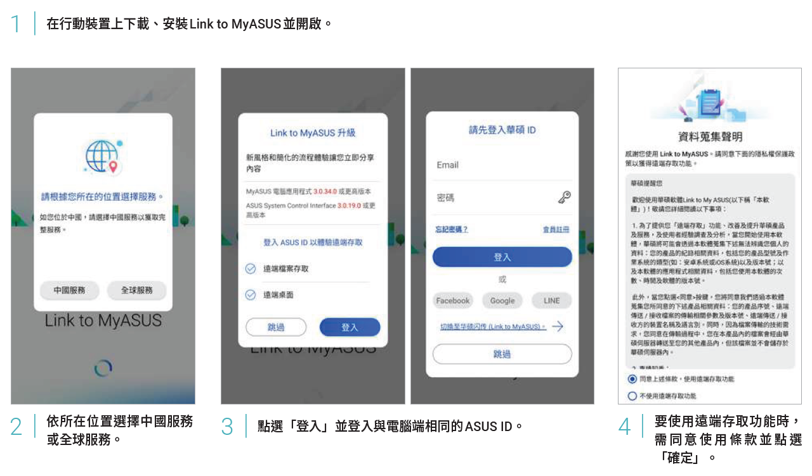

不需任何傳輸線或複雜的連線設定、不限Android或iOS裝置都能下載使用，利用Link to MyASUS同步手機與電腦完全不費吹灰之力！
數位狂潮 第78期 數位生活／文：編輯部
電腦無縫連結行動裝置
Link to MyASUS功能透過相同網域與藍牙，讓個人電腦與行動裝置完美無線連結，而且不分Android 或iOS作業系統的行動裝置均可免費下載使用，建立連線後個人電腦與行動裝置傳輸檔案輕而易舉，當登入相同ASUS ID時，也能在行動裝置上存取電腦桌面與檔案。開啟相關權限後，還能在電腦上撥打或接聽來電、檢視手機聯絡人與接收通知訊息。
首次使用Link to MyASUS

透過藍牙連線電腦
功能1│檔案無線秒傳
不論電腦傳給行動裝置，或行動裝置傳給電腦，只需選取檔案進行發送，目標裝置就能立即接收開啟。（以下以行動裝置發送檔案為例）
功能2│網址分享隨傳隨開
在手機上瀏覽的網頁想到電腦上繼續閱讀嗎？透過Link to MyASUS分享，瞬間就能在電腦上開啟。
功能3│電腦檔案遠端存取無礙
需要查找電腦裡的檔案嗎？利用遠端檔案存取功能，在手機上也能搜尋、瀏覽電腦中的檔案文件。